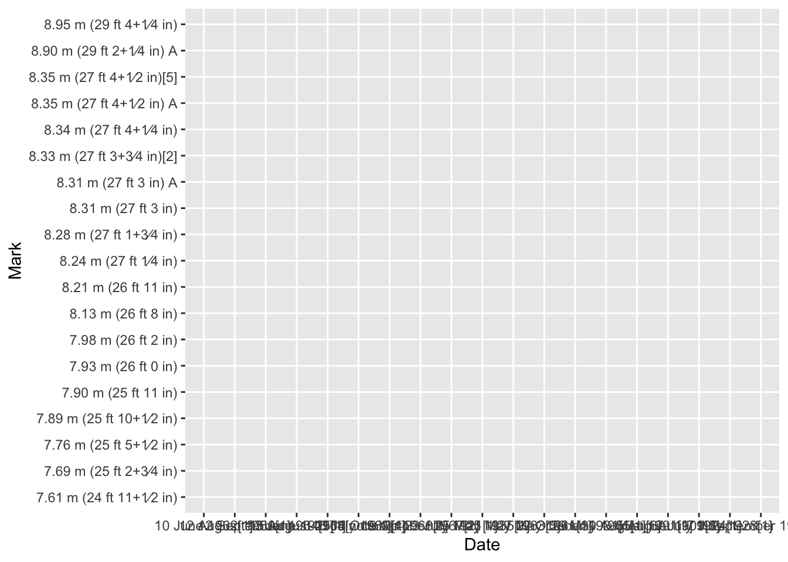

# extract html tables from html doctables_list =html_table(doc)class(tables_list)
[1] "list"
# desidered table tbl = tables_list[[1]]tbl
# A tibble: 19 × 5
Mark Wind Athlete Place Date
<chr> <chr> <chr> <chr> <chr>
1 7.61 m (24 ft 11+1⁄2 in) "" Peter O'Connor (IRE) Dublin, Ire… 5 Au…
2 7.69 m (25 ft 2+3⁄4 in) "" Edward Gourdin (USA) Cambridge, … 23 J…
3 7.76 m (25 ft 5+1⁄2 in) "" Robert LeGendre (USA) Paris, Fran… 7 Ju…
4 7.89 m (25 ft 10+1⁄2 in) "" DeHart Hubbard (USA) Chicago, Un… 13 J…
5 7.90 m (25 ft 11 in) "" Edward Hamm (USA) Cambridge, … 7 Ju…
6 7.93 m (26 ft 0 in) "0.0" Sylvio Cator (HAI) Paris, Fran… 9 Se…
7 7.98 m (26 ft 2 in) "0.5" Chuhei Nambu (JPN) Tokyo, Japan 27 O…
8 8.13 m (26 ft 8 in) "1.5" Jesse Owens (USA) Ann Arbor, … 25 M…
9 8.21 m (26 ft 11 in) "0.0" Ralph Boston (USA) Walnut, Uni… 12 A…
10 8.24 m (27 ft 1⁄4 in) "1.8" Ralph Boston (USA) Modesto, Un… 27 M…
11 8.28 m (27 ft 1+3⁄4 in) "1.2" Ralph Boston (USA) Moscow, Sov… 16 J…
12 8.31 m (27 ft 3 in) A "−0.1" Igor Ter-Ovanesyan (URS) Yerevan, So… 10 J…
13 8.33 m (27 ft 3+3⁄4 in)[2] "" Phil Shinnick (USA) Modesto, Un… 25 M…
14 8.31 m (27 ft 3 in) "0.0" Ralph Boston (USA) Kingston, J… 15 A…
15 8.34 m (27 ft 4+1⁄4 in) "1.0" Ralph Boston (USA) Los Angeles… 12 S…
16 8.35 m (27 ft 4+1⁄2 in)[5] "0.0" Ralph Boston (USA) Modesto, Un… 29 M…
17 8.35 m (27 ft 4+1⁄2 in) A "0.0" Igor Ter-Ovanesyan (URS) Mexico City… 19 O…
18 8.90 m (29 ft 2+1⁄4 in) A "2.0" Bob Beamon (USA) Mexico City… 18 O…
19 8.95 m (29 ft 4+1⁄4 in) "0.3" Mike Powell (USA) Tokyo, Japan 30 A…
ggplot(tbl, aes(x = Date, y = Mark)) +geom_line()
`geom_line()`: Each group consists of only one observation.
ℹ Do you need to adjust the group aesthetic?

wiki ="https://en.wikipedia.org/wiki/Men%27s_long_jump_world_record_progression"tbls = wiki |>read_html() |>html_table()tbl = tbls[[1]]tbl
# A tibble: 19 × 5
Mark Wind Athlete Place Date
<chr> <chr> <chr> <chr> <chr>
1 7.61 m (24 ft 11+1⁄2 in) "" Peter O'Connor (IRE) Dublin, Ire… 5 Au…
2 7.69 m (25 ft 2+3⁄4 in) "" Edward Gourdin (USA) Cambridge, … 23 J…
3 7.76 m (25 ft 5+1⁄2 in) "" Robert LeGendre (USA) Paris, Fran… 7 Ju…
4 7.89 m (25 ft 10+1⁄2 in) "" DeHart Hubbard (USA) Chicago, Un… 13 J…
5 7.90 m (25 ft 11 in) "" Edward Hamm (USA) Cambridge, … 7 Ju…
6 7.93 m (26 ft 0 in) "0.0" Sylvio Cator (HAI) Paris, Fran… 9 Se…
7 7.98 m (26 ft 2 in) "0.5" Chuhei Nambu (JPN) Tokyo, Japan 27 O…
8 8.13 m (26 ft 8 in) "1.5" Jesse Owens (USA) Ann Arbor, … 25 M…
9 8.21 m (26 ft 11 in) "0.0" Ralph Boston (USA) Walnut, Uni… 12 A…
10 8.24 m (27 ft 1⁄4 in) "1.8" Ralph Boston (USA) Modesto, Un… 27 M…
11 8.28 m (27 ft 1+3⁄4 in) "1.2" Ralph Boston (USA) Moscow, Sov… 16 J…
12 8.31 m (27 ft 3 in) A "−0.1" Igor Ter-Ovanesyan (URS) Yerevan, So… 10 J…
13 8.33 m (27 ft 3+3⁄4 in)[2] "" Phil Shinnick (USA) Modesto, Un… 25 M…
14 8.31 m (27 ft 3 in) "0.0" Ralph Boston (USA) Kingston, J… 15 A…
15 8.34 m (27 ft 4+1⁄4 in) "1.0" Ralph Boston (USA) Los Angeles… 12 S…
16 8.35 m (27 ft 4+1⁄2 in)[5] "0.0" Ralph Boston (USA) Modesto, Un… 29 M…
17 8.35 m (27 ft 4+1⁄2 in) A "0.0" Igor Ter-Ovanesyan (URS) Mexico City… 19 O…
18 8.90 m (29 ft 2+1⁄4 in) A "2.0" Bob Beamon (USA) Mexico City… 18 O…
19 8.95 m (29 ft 4+1⁄4 in) "0.3" Mike Powell (USA) Tokyo, Japan 30 A…
Regular Expressions
# Mark columnmark1 =as.numeric(str_extract(tbl$Mark, pattern ="[0-9]\\.[0-9][0-9]"))mark1
# caret or 'hat' ^: beginning of the string metacharacter# dollar $: end of the string metacharactertbl$Date
[1] "5 August 1901[1]" "23 July 1921[1]"
[3] "7 July 1924[1]" "13 June 1925[1]"
[5] "7 July 1928[1]" "9 September 1928[1]"
[7] "27 October 1931[1]" "25 May 1935[1]"
[9] "12 August 1960[1]" "27 May 1961[1]"
[11] "16 July 1961[1]" "10 June 1962[1]"
[13] "25 May 1963[3]" "15 August 1964[note 1][4]"
[15] "12 September 1964[1]" "29 May 1965[1][6]"
[17] "19 October 1967[1]" "18 October 1968[1]"
[19] "30 August 1991[1]"
# get the day number from Datestr_extract(tbl$Date, "^\\d\\d?")
[1] NA "United States" NA "United States"
[5] "United States" NA NA "United States"
[9] "United States" "United States" "Soviet Union" "Soviet Union"
[13] "United States" NA "United States" "United States"
[17] NA NA NA